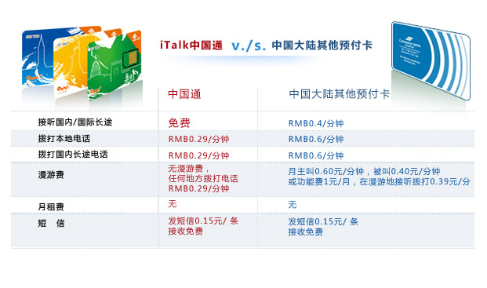

又一＂特權＂來了：iTalk中國通平價打遍中國！
（弗吉尼亞維也納5月17日）
提問：每次回國，最麻煩的事情是什麼？
回答：每次回國，下飛機那一時刻是最麻煩的了。一方面要着急找地方換人民幣，另一方面又要找地方買手機卡，好聯繫接機的人。坐了十幾個小時已經疲憊不堪，還要在機場焦頭爛額，真的很麻煩。
提問：以前的手機卡呢？
回答：每次回國，買一張預付卡，買手機號就得花個幾十塊錢，打起電話來在北京一個價格，打到上海一個價格。還有漫遊費等，亂七八糟加起來，也要花上不少錢呢！另外，每次回國，都得重新買一張手機卡，電話號碼換得勤，朋友聯繫也非常不方便。
提問：有沒有一種手機卡，方便又省錢呢？
回答：當然了！iTalkBB攜手中國聯通共同推出"iTalk中國通"手機卡，打遍中國只要RMB?0.29/分鐘，不管市內電話還是國內長途，都是這個價格。另外也沒有漫遊費，不管在北京上海還是廣州，都可以享受平價通話。
全國接聽不用錢。號碼免費保留2年，每次充值還可以延長號碼保留時間。
提問：這樣的優惠？只有iTalkBB的用戶才可以用嗎？
回答：沒錯，這是iTalkBB特別為其使用者提供的獨享服務。只要加入iTalkBB的服務，也可以獲得中國通手機卡。iTalkBB的服務方便又省錢，家用電話只要每月$4.99起，就可以直撥美加中港台的服務，打多少算多少；另外再加$20，就可以升級全球包月計劃，無限撥打全美+全球的服務。價 格優惠，簡單省錢！
提問：還有特殊的優惠嗎？
回答：當然了！現在購買iTalkBB的產品，還可以獲得一部手機無限撥打國際長途的特殊服務；還有一年免費的中國號碼950，讓國內親友直接撥打美國而無需國際長途話費。優惠多多，歡迎撥打1-877-482-5522或登陸www.iTalkBB.com查詢詳情。
關於iTalkBB：
iTalkBB新電信是享譽全美的優秀通訊品牌，是國際電訊行業的領導和先驅。其以頂級全球網路和前沿技術為依託，以最具競爭力的價格為客戶提供高質、清晰的本地、國內及國際長途電話服務，以及高清中文電視直播、回播與點播服務。其電話業務能完全取代傳統家庭電話，並享受多重免費提供的附加功能如來電等待、三方通話、來電顯、來電轉接等。另有獨一無二的功能-中國大陸、台灣、香港、南韓當地號碼，當地親友只要撥打此號碼，就能接通到在美國的親友，而無需支付國際長途費用。 iTalkBB的高清中文電視服務，自問世以來便受到了廣泛的好評和歡迎。超過五十個熱門頻道支持實時直播與48小時回看，海量最新電影電視劇綜藝節目免費無限點播，讓用戶以最低價格盡享華語娛樂。 iTalkBB新電信將不斷努力，與您共同成就更美好的生活。 iTalkBB設有24小時中英文的客戶服務熱線1-877-482-5522和官方網站www.iTalkBB.com，一年365天提供不間斷的服務與更多信息的查詢。